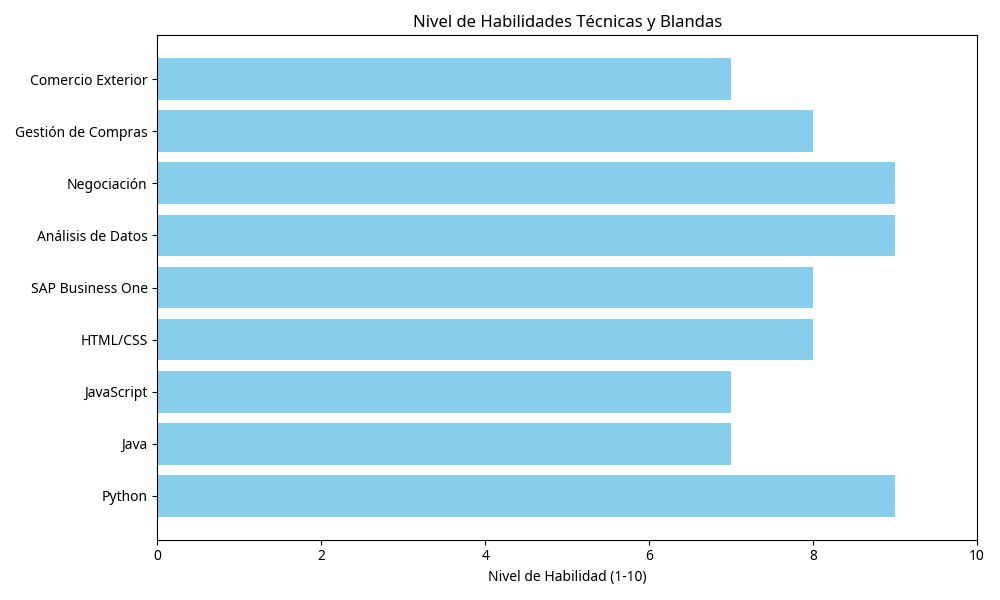

Profesional en Finanzas y Negocios Internacionales | Ciencia de Datos | Programación | Abastecimiento
Profesional en Finanzas y Negocios Internacionales con amplia experiencia en Gestión de Compras, Negociación Estratégica, Abastecimiento y Comercio Exterior. Especialista en la optimización de procesos logísticos y control de inventarios, con un fuerte enfoque en la integración de tecnologías de la información (Ciencia de Datos y Programación) para la toma de decisiones basada en datos.
Mi objetivo es aplicar mis conocimientos en análisis de datos y programación para mejorar la eficiencia y la toma de decisiones en la cadena de suministro, generando valor y optimizando recursos.
Responsabilidades clave:
Enfoque en análisis económico, financiero y comercio internacional.

Puedes contactarme a través de mi perfil de LinkedIn: